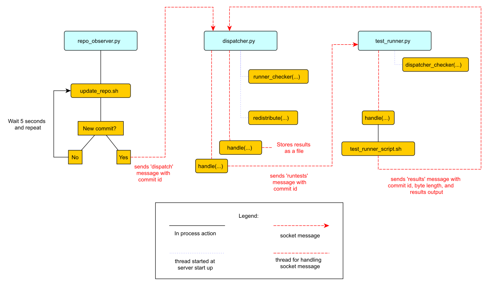

A Continuous Integration System
by Malini Das
Malini Das is a software engineer who is passionate about developing quickly (but safely!), and solving cross-functional problems. She has worked at Mozilla as a tools engineer and is currently honing her skills at Twitch. Follow Malini on Twitter or on her blog.
What is a Continuous Integration System?
When developing software, we want to be able to verify that our new features or bug fixes are safe and work as expected. We do this by running tests against our code. Sometimes, developers will run tests locally to verify that their changes are safe, but developers may not have the time to test their code on every system their software runs in. Further, as more and more tests are added the amount of time required to run them, even only locally, becomes less viable. Because of this, continuous integration systems have been created.
Continuous Integration (CI) systems are dedicated systems used to test new code. Upon a commit to the code repository, it is the responsibility of the continuous integration system to verify that this commit will not break any tests. To do this, the system must be able to fetch the new changes, run the tests and report its results. Like any other system, it should also be failure resistant. This means if any part of the system fails, it should be able to recover and continue from that point.
This test system should also handle load well, so that we can get test results in a reasonable amount of time in the event that commits are being made faster than the tests can be run. We can achieve this by distributing and parallelizing the testing effort. This project will demonstrate a small, bare-bones distributed continuous integration system that is designed for extensibility.
Project Limitations and Notes
This project uses Git as the repository for the code that needs to be tested. Only standard source code management calls will be used, so if you are unfamiliar with Git but are familiar with other version control systems (VCS) like svn or Mercurial, you can still follow along.
Due to the limitations of code length and unittest, I simplified test
discovery. We will only run tests that are in a directory named
tests within the repository.
Continuous integration systems monitor a master repository which is usually hosted on a web server, and not local to the CI’s file systems. For the cases of our example, we will use a local repository instead of a remote repository.
Continuous integration systems need not run on a fixed, regular schedule. You can also have them run every few commits, or per-commit. For our example case, the CI system will run periodically. This means if it is set up to check for changes in five-second periods, it will run tests against the most recent commit made after the five-second period. It won’t test every commit made within that period of time, only the most recent one.
This CI system is designed to check periodically for changes in a repository. In real-world CI systems, you can also have the repository observer get notified by a hosted repository. Github, for example, provides “post-commit hooks” which send out notifications to a URL. Following this model, the repository observer would be called by the web server hosted at that URL to respond to that notification. Since this is complex to model locally, we’re using an observer model, where the repository observer will check for changes instead of being notified.
CI systems also have a reporter aspect, where the test runner reports its results to a component that makes them available for people to see, perhaps on a webpage. For simplicity, this project gathers the test results and stores them as files in the file system local to the dispatcher process.
Note that the architecture this CI system uses is just one possibility among many. This approach has been chosen to simplify our case study into three main components.
Introduction
The basic structure of a continuous integration system consists of three components: an observer, a test job dispatcher, and a test runner. The observer watches the repository. When it notices that a commit has been made, it notifies the job dispatcher. The job dispatcher then finds a test runner and gives it the commit number to test.
There are many ways to architect a CI system. We could have the observer, dispatcher and runner be the same process on a single machine. This approach is very limited since there is no load handling, so if more changes are added to the repository than the CI system can handle, a large backlog will accrue. This approach is also not fault-tolerant at all; if the computer it is running on fails or there is a power outage, there are no fallback systems, so no tests will run. The ideal system would be one that can handle as many test jobs as requested, and will do its best to compensate when machines go down.
To build a CI system that is fault-tolerant and load-bearing, in this project, each of these components is its own process. This will let each process be independent of the others, and let us run multiple instances of each process. This is useful when you have more than one test job that needs to be run at the same time. We can then spawn multiple test runners in parallel, allowing us to run as many jobs as needed, and prevent us from accumulating a backlog of queued tests.
In this project, not only do these components run as separate processes, but they also communicate via sockets, which will let us run each process on a separate, networked machine. A unique host/port address is assigned to each component, and each process can communicate with the others by posting messages at the assigned addresses.
This design will let us handle hardware failures on the fly by enabling a distributed architecture. We can have the observer run on one machine, the test job dispatcher on another, and the test runners on another, and they can all communicate with each other over a network. If any of these machines go down, we can schedule a new machine to go up on the network, so the system becomes fail-safe.
This project does not include auto-recovery code, as that is dependent on your distributed system’s architecture, but in the real world, CI systems are run in a distributed environment like this so they can have failover redundancy (i.e., we can fall back to a standby machine if one of the machines a process was running on becomes defunct).
For the purposes of this project, each of these processes will be locally and manually started distinct local ports.
Files in this Project
This project contains Python files for each of these components: the repository
observer (repo_observer.py), the test job dispatcher
(dispatcher.py), and the test runner (test_runner.py). Each of
these three processes communicate with each other using sockets, and since the
code used to transmit information is shared by all of them, there is a
helpers.py file that contains it, so each process imports the communicate
function from here instead of having it duplicated in the file.
There are also bash script files used by these processes. These script files are used to execute bash and git commands in an easier way than constantly using Python’s operating system-level modules like os and subprocess.
Lastly, there is a tests directory, which contains two example tests the CI system will run. One test will pass, and the other will fail.
Initial Setup
While this CI system is ready to work in a distributed system, let us start by running everything locally on one computer so we can get a grasp on how the CI system works without adding the risk of running into network-related issues. If you wish to run this in a distributed environment, you can run each component on its own machine.
Continuous integration systems run tests by detecting changes in a code repository, so to start, we will need to set up the repository our CI system will monitor.
Let’s call this test_repo:
$ mkdir test_repo
$ cd test_repo
$ git init
This will be our master repository. This is where developers check in their code, so our CI should pull this repository and check for commits, then run tests. The thing that checks for new commits is the repository observer.
The repository observer works by checking commits, so we need at least one commit in the master repository. Let’s commit our example tests so we have some tests to run.
Copy the tests folder from this code base to test_repo and commit it:
$ cp -r /this/directory/tests /path/to/test_repo/
$ cd /path/to/test\_repo
$ git add tests/
$ git commit -m ”add tests”
Now you have a commit in the master repository.
The repo observer component will need its own clone of the code, so it
can detect when a new commit is made. Let’s create a clone of our master
repository, and call it test_repo_clone_obs:
$ git clone /path/to/test_repo test_repo_clone_obs
The test runner will also need its own clone of the code, so it can
checkout the repository at a given commit and run the tests. Let’s
create another clone of our master repository, and call it
test_repo_clone_runner:
$ git clone /path/to/test_repo test_repo_clone_runner
The Components
The Repository Observer (repo_observer.py)
The repository observer monitors a repository and notifies the dispatcher when a new commit is seen. In order to work with all version control systems (since not all VCSs have built-in notification systems), this repository observer is written to periodically check the repository for new commits instead of relying on the VCS to notify it that changes have been made.
The observer will poll the repository periodically, and when a change is seen, it will tell the dispatcher the newest commit ID to run tests against. The observer checks for new commits by finding the current commit ID in its repository, then updates the repository, and lastly, it finds the latest commit ID and compares them. For the purposes of this example, the observer will only dispatch tests against the latest commit. This means that if two commits are made between a periodic check, the observer will only run tests against the latest commit. Usually, a CI system will detect all commits since the last tested commit, and will dispatch test runners for each new commit, but I have modified this assumption for simplicity.
The observer must know which repository to observe. We previously
created a clone of our repository at /path/to/test_repo_clone_obs.
The observer will use this clone to detect changes. To allow the
repository observer to use this clone, we pass it the path when we
invoke the repo_observer.py file. The repository observer will use this
clone to pull from the main repository.
We must also give the observer the dispatcher’s address, so the observer
may send it messages. When you start the repository observer, you can
pass in the dispatcher’s server address using the --dispatcher-server
command line argument. If you do not pass it in, it will assume the
default address of localhost:8888.
def poll():
parser = argparse.ArgumentParser()
parser.add_argument("--dispatcher-server",
help="dispatcher host:port, " \
"by default it uses localhost:8888",
default="localhost:8888",
action="store")
parser.add_argument("repo", metavar="REPO", type=str,
help="path to the repository this will observe")
args = parser.parse_args()
dispatcher_host, dispatcher_port = args.dispatcher_server.split(":")
Once the repository observer file is invoked, it starts the poll()
function. This function parses the command line arguments, and then
kicks off an infinite while loop. The while loop is used to periodically
check the repository for changes. The first thing it does is call the
update_repo.sh Bash script 1.
while True:
try:
# call the bash script that will update the repo and check
# for changes. If there's a change, it will drop a .commit_id file
# with the latest commit in the current working directory
subprocess.check_output(["./update_repo.sh", args.repo])
except subprocess.CalledProcessError as e:
raise Exception("Could not update and check repository. " +
"Reason: %s" % e.output)
The update_repo.sh file is used to identify any new commits and let the
repository observer know. It does this by noting what commit ID we are
currently aware of, then pulls the repository, and checks the latest
commit ID. If they match, no changes are made, so the repository
observer doesn’t need to do anything, but if there is a difference in
the commit ID, then we know a new commit has been made. In this case,
update_repo.sh will create a file called .commit_id with the latest
commit ID stored in it.
A step-by-step breakdown of update_repo.sh is as follows. First, the
script sources the run_or_fail.sh file, which provides the
run_or_fail helper method used by all our shell scripts. This method
is used to run the given command, or fail with the given error message.
#!/bin/bash
source run_or_fail.sh
Next, the script tries to remove a file named .commit_id. Since
updaterepo.sh is called infinitely by the repo_observer.py file, if we
previously had a new commit, then .commit_id was created, but holds a
commit we already tested. Therefore, we want to remove that file, and
create a new one only if a new commit is found.
bash rm -f .commit_id
After it removes the file (if it existed), it verifies that the repository we are observing exists, and then resets it to the most recent commit, in case anything caused it to get out of sync.
run_or_fail "Repository folder not found!" pushd $1 1> /dev/null
run_or_fail "Could not reset git" git reset --hard HEAD
It then calls git log and parses the output, looking for the most recent commit ID.
COMMIT=$(run_or_fail "Could not call 'git log' on repository" git log -n1)
if [ $? != 0 ]; then
echo "Could not call 'git log' on repository"
exit 1
fi
COMMIT_ID=`echo $COMMIT | awk '{ print $2 }'`
Then it pulls the repository, getting any recent changes, then gets the most recent commit ID.
run_or_fail "Could not pull from repository" git pull
COMMIT=$(run_or_fail "Could not call 'git log' on repository" git log -n1)
if [ $? != 0 ]; then
echo "Could not call 'git log' on repository"
exit 1
fi
NEW_COMMIT_ID=`echo $COMMIT | awk '{ print $2 }'`
Lastly, if the commit ID doesn’t match the previous ID, then we know we have new commits to check, so the script stores the latest commit ID in a .commit_id file.
# if the id changed, then write it to a file
if [ $NEW_COMMIT_ID != $COMMIT_ID ]; then
popd 1> /dev/null
echo $NEW_COMMIT_ID > .commit_id
fi
When update_repo.sh finishes running in repo_observer.py, the
repository observer checks for the existence of the .commit_id file. If
the file does exist, then we know we have a new commit, and we need to
notify the dispatcher so it can kick off the tests. The repository
observer will check the dispatcher server’s status by connecting to it
and sending a ‘status’ request, to make sure there are no problems with
it, and to make sure it is ready for instruction.
if os.path.isfile(".commit_id"):
try:
response = helpers.communicate(dispatcher_host,
int(dispatcher_port),
"status")
except socket.error as e:
raise Exception("Could not communicate with dispatcher server: %s" % e)
If it responds with “OK”, then the repository observer opens the
.commit_id file, reads the latest commit ID and sends that ID to the
dispatcher, using a dispatch:<commit ID> request. It will then sleep
for five seconds and repeat the process. We’ll also try again in five
seconds if anything went wrong along the way.
if response == "OK":
commit = ""
with open(".commit_id", "r") as f:
commit = f.readline()
response = helpers.communicate(dispatcher_host,
int(dispatcher_port),
"dispatch:%s" % commit)
if response != "OK":
raise Exception("Could not dispatch the test: %s" %
response)
print "dispatched!"
else:
raise Exception("Could not dispatch the test: %s" %
response)
time.sleep(5)
The repository observer will repeat this process forever, until you kill
the process via a KeyboardInterrupt (Ctrl+c), or by sending it a kill
signal.
The Dispatcher (dispatcher.py)
The dispatcher is a separate service used to delegate testing tasks. It listens on a port for requests from test runners and from the repository observer. It allows test runners to register themselves, and when given a commit ID from the repository observer, it will dispatch a test runner against the new commit. It also gracefully handles any problems with the test runners and will redistribute the commit ID to a new test runner if anything goes wrong.
When dispatch.py is executed, the serve function is called. First it
parses the arguments that allow you to specify the dispatcher’s host and
port:
def serve():
parser = argparse.ArgumentParser()
parser.add_argument("--host",
help="dispatcher's host, by default it uses localhost",
default="localhost",
action="store")
parser.add_argument("--port",
help="dispatcher's port, by default it uses 8888",
default=8888,
action="store")
args = parser.parse_args()
This starts the dispatcher server, and two other threads. One thread
runs the runner_checker function, and other runs the redistribute
function.
server = ThreadingTCPServer((args.host, int(args.port)), DispatcherHandler)
print `serving on %s:%s` % (args.host, int(args.port))
...
runner_heartbeat = threading.Thread(target=runner_checker, args=(server,))
redistributor = threading.Thread(target=redistribute, args=(server,))
try:
runner_heartbeat.start()
redistributor.start()
# Activate the server; this will keep running until you
# interrupt the program with Ctrl+C or Cmd+C
server.serve_forever()
except (KeyboardInterrupt, Exception):
# if any exception occurs, kill the thread
server.dead = True
runner_heartbeat.join()
redistributor.join()
The runner_checker function periodically pings each registered test
runner to make sure they are still responsive. If they become
unresponsive, then that runner will be removed from the pool and its
commit ID will be dispatched to the next available runner. The function
will log the commit ID in the pending_commits variable.
def runner_checker(server):
def manage_commit_lists(runner):
for commit, assigned_runner in server.dispatched_commits.iteritems():
if assigned_runner == runner:
del server.dispatched_commits[commit]
server.pending_commits.append(commit)
break
server.runners.remove(runner)
while not server.dead:
time.sleep(1)
for runner in server.runners:
s = socket.socket(socket.AF_INET, socket.SOCK_STREAM)
try:
response = helpers.communicate(runner["host"],
int(runner["port"]),
"ping")
if response != "pong":
print "removing runner %s" % runner
manage_commit_lists(runner)
except socket.error as e:
manage_commit_lists(runner)
The redistribute function is used to dispatch the commit IDs logged in
pending_commits. When redistribute runs, it checks if there are any
commit IDs in pending_commits. If so, it calls the dispatch_tests
function with the commit ID.
def redistribute(server):
while not server.dead:
for commit in server.pending_commits:
print "running redistribute"
print server.pending_commits
dispatch_tests(server, commit)
time.sleep(5)
The dispatch_tests function is used to find an available test runner
from the pool of registered runners. If one is available, it will send a
runtest message to it with the commit ID. If none are currently
available, it will wait two seconds and repeat this process. Once
dispatched, it logs which commit ID is being tested by which test runner
in the dispatched_commits variable. If the commit ID is in the
pending_commits variable, dispatch_tests will remove it since it has
already been successfully re-dispatched.
def dispatch_tests(server, commit_id):
# NOTE: usually we don't run this forever
while True:
print "trying to dispatch to runners"
for runner in server.runners:
response = helpers.communicate(runner["host"],
int(runner["port"]),
"runtest:%s" % commit_id)
if response == "OK":
print "adding id %s" % commit_id
server.dispatched_commits[commit_id] = runner
if commit_id in server.pending_commits:
server.pending_commits.remove(commit_id)
return
time.sleep(2)
The dispatcher server uses the SocketServer module, which is a very simple
server that is part of the standard library. There are four basic server types
in the SocketServer module: TCP, UDP, UnixStreamServer and
UnixDatagramServer. We will be using a TCP-based socket server so we can
ensure continuous, ordered streams of data between servers, as UDP does not
ensure this.
The default TCPServer provided by SocketServer can only handle one
request at a time, so it cannot handle the case where the dispatcher is
talking to one connection, say from a test runner, and then a new
connection comes in, say from the repository observer. If this happens,
the repository observer would have to wait for the first connection to
complete and disconnect before it would be serviced. This is not ideal
for our case, since the dispatcher server must be able to directly and
swiftly communicate with all test runners and the repository observer.
In order for the dispatcher server to handle simultaneous connections,
it uses the ThreadingTCPServer custom class, which adds threading
ability to the default SocketServer. This means that any time the
dispatcher receives a connection request, it spins off a new process
just for that connection. This allows the dispatcher to handle multiple
requests at the same time.
class ThreadingTCPServer(SocketServer.ThreadingMixIn, SocketServer.TCPServer):
runners = [] # Keeps track of test runner pool
dead = False # Indicate to other threads that we are no longer running
dispatched_commits = {} # Keeps track of commits we dispatched
pending_commits = [] # Keeps track of commits we have yet to dispatch
The dispatcher server works by defining handlers for each request. This
is defined by the DispatcherHandler class, which inherits from
SocketServer’s BaseRequestHandler. This base class just needs us to
define the handle function, which will be invoked whenever a connection
is requested. The handle function defined in DispatcherHandler is our
custom handler, and it will be called on each connection. It looks at
the incoming connection request (self.request holds the request
information), and parses out what command is being requested of it.
class DispatcherHandler(SocketServer.BaseRequestHandler):
"""
The RequestHandler class for our dispatcher.
This will dispatch test runners against the incoming commit
and handle their requests and test results
"""
command_re = re.compile(r"(\w+)(:.+)*")
BUF_SIZE = 1024
def handle(self):
self.data = self.request.recv(self.BUF_SIZE).strip()
command_groups = self.command_re.match(self.data)
if not command_groups:
self.request.sendall("Invalid command")
return
command = command_groups.group(1)
It handles four commands: status, register, dispatch, and results.
status is used to check if the dispatcher server is up and running.
if command == "status":
print "in status"
self.request.sendall("OK")
In order for the dispatcher to do anything useful, it needs to have at
least one test runner registered. When register is called on a host:port
pair, it stores the runner’s information in a list (the runners object
attached to the ThreadingTCPServer object) so it can communicate with
the runner later, when it needs to give it a commit ID to run tests
against.
elif command == "register":
# Add this test runner to our pool
print "register"
address = command_groups.group(2)
host, port = re.findall(r":(\w*)", address)
runner = {"host": host, "port":port}
self.server.runners.append(runner)
self.request.sendall("OK")
dispatch is used by the repository observer to dispatch a test runner
against a commit. The format of this command is dispatch:<commit ID>.
The dispatcher parses out the commit ID from this message and sends it
to the test runner.
elif command == "dispatch":
print "going to dispatch"
commit_id = command_groups.group(2)[1:]
if not self.server.runners:
self.request.sendall("No runners are registered")
else:
# The coordinator can trust us to dispatch the test
self.request.sendall("OK")
dispatch_tests(self.server, commit_id)
results is used by a test runner to report the results of a finished
test run. The format of this command is
results:<commit ID>:<length of results data in bytes>:<results>.
The <commit ID> is used to identify which commit ID the tests were run
against. The <length of results data in bytes> is used to figure out
how big a buffer is needed for the results data. Lastly, <results>
holds the actual result output.
elif command == "results":
print "got test results"
results = command_groups.group(2)[1:]
results = results.split(":")
commit_id = results[0]
length_msg = int(results[1])
# 3 is the number of ":" in the sent command
remaining_buffer = self.BUF_SIZE - \
(len(command) + len(commit_id) + len(results[1]) + 3)
if length_msg > remaining_buffer:
self.data += self.request.recv(length_msg - remaining_buffer).strip()
del self.server.dispatched_commits[commit_id]
if not os.path.exists("test_results"):
os.makedirs("test_results")
with open("test_results/%s" % commit_id, "w") as f:
data = self.data.split(":")[3:]
data = "\n".join(data)
f.write(data)
self.request.sendall("OK")
The Test Runner (test_runner.py)
The test runner is responsible for running tests against a given commit ID and reporting the results. It communicates only with the dispatcher server, which is responsible for giving it the commit IDs to run against, and which will receive the test results.
When the test_runner.py file is invoked, it calls the serve function
which starts the test runner server, and also starts a thread to run the
dispatcher_checker function. Since this startup process is very similar
to the ones described in repo_observer.py and dispatcher.py, we omit
the description here.
The dispatcher_checker function pings the dispatcher server every five
seconds to make sure it is still up and running. This is important for
resource management. If the dispatcher goes down, then the test runner
will shut down since it won’t be able to do any meaningful work if there
is no dispatcher to give it work or to report to.
def dispatcher_checker(server):
while not server.dead:
time.sleep(5)
if (time.time() - server.last_communication) > 10:
try:
response = helpers.communicate(
server.dispatcher_server["host"],
int(server.dispatcher_server["port"]),
"status")
if response != "OK":
print "Dispatcher is no longer functional"
server.shutdown()
return
except socket.error as e:
print "Can't communicate with dispatcher: %s" % e
server.shutdown()
return
The test runner is a ThreadingTCPServer, like the dispatcher server. It
requires threading because not only will the dispatcher be giving it a
commit ID to run, but the dispatcher will be pinging the runner
periodically to verify that it is still up while it is running tests.
class ThreadingTCPServer(SocketServer.ThreadingMixIn, SocketServer.TCPServer):
dispatcher_server = None # Holds the dispatcher server host/port information
last_communication = None # Keeps track of last communication from dispatcher
busy = False # Status flag
dead = False # Status flag
The communication flow starts with the dispatcher requesting that the runner accept a commit ID to run. If the test runner is ready to run the job, it responds with an acknowledgement to the dispatcher server, which then closes the connection. In order for the test runner server to both run tests and accept more requests from the dispatcher, it starts the requested test job on a new thread.
This means that when the dispatcher server makes a request (a ping, in this case) and expects a response, it will be done on a separate thread, while the test runner is busy running tests on its own thread. This allows the test runner server to handle multiple tasks simultaneously. Instead of this threaded design, it is possible to have the dispatcher server hold onto a connection with each test runner, but this would increase the dispatcher server’s memory needs, and is vulnerable to network problems, like accidentally dropped connections.
The test runner server responds to two messages from the dispatcher. The first
is ping, which is used by the dispatcher server to verify that the runner is
still active.
class TestHandler(SocketServer.BaseRequestHandler):
...
def handle(self):
....
if command == "ping":
print "pinged"
self.server.last_communication = time.time()
self.request.sendall("pong")
The second is runtest, which accepts messages of the form runtest:<commit
ID>, and is used to kick off tests on the given commit. When runtest is
called, the test runner will check to see if it is already running a test, and
if so, it will return a BUSY response to the dispatcher. If it is available,
it will respond to the server with an OK message, set its status as busy and
run its run_tests function.
elif command == "runtest":
print "got runtest command: am I busy? %s" % self.server.busy
if self.server.busy:
self.request.sendall("BUSY")
else:
self.request.sendall("OK")
print "running"
commit_id = command_groups.group(2)[1:]
self.server.busy = True
self.run_tests(commit_id,
self.server.repo_folder)
self.server.busy = False
This function calls the shell script test_runner_script.sh, which
updates the repository to the given commit ID. Once the script returns,
if it was successful at updating the repository we run the tests using
unittest and gather the results in a file. When the tests have finished
running, the test runner reads in the results file and sends it in a
results message to the dispatcher.
def run_tests(self, commit_id, repo_folder):
# update repo
output = subprocess.check_output(["./test_runner_script.sh",
repo_folder, commit_id])
print output
# run the tests
test_folder = os.path.join(repo_folder, "tests")
suite = unittest.TestLoader().discover(test_folder)
result_file = open("results", "w")
unittest.TextTestRunner(result_file).run(suite)
result_file.close()
result_file = open("results", "r")
# give the dispatcher the results
output = result_file.read()
helpers.communicate(self.server.dispatcher_server["host"],
int(self.server.dispatcher_server["port"]),
"results:%s:%s:%s" % (commit_id, len(output), output))
Here’s test_runner_script.sh:
#!/bin/bash
REPO=$1
COMMIT=$2
source run_or_fail.sh
run_or_fail "Repository folder not found" pushd "$REPO" 1> /dev/null
run_or_fail "Could not clean repository" git clean -d -f -x
run_or_fail "Could not call git pull" git pull
run_or_fail "Could not update to given commit hash" git reset --hard "$COMMIT"
In order to run test_runner.py, you must point it to a clone of the
repository to run tests against. In this case, you can use the previously
created /path/to/test_repo test_repo_clone_runner clone as the argument. By
default, test_runner.py will start its own server on localhost using a port
in the range 8900-9000, and will try to connect to the dispatcher server at
localhost:8888. You may pass it optional arguments to change these values.
The --host and --port arguments are used to designate a specific address to
run the test runner server on, and the --dispatcher-server argument specifies
the address of the dispatcher.
Control Flow Diagram
Figure: Control Flow is an overview diagram of this system. This
diagram assumes that all three files (repo_observer.py,
dispatcher.py and test_runner.py) are already running, and describes the
actions each process takes when a new commit is made.

### Running the CodeWe can run this simple CI system locally, using three different terminal shells for each process. We start the dispatcher first, running on port 8888:
$ python dispatcher.py
In a new shell, we start the test runner (so it can register itself with the dispatcher):
$ python test_runner.py <path/to/test_repo_clone_runner>
The test runner will assign itself its own port, in the range 8900-9000. You may run as many test runners as you like.
Lastly, in another new shell, let’s start the repo observer:
$ python repo_observer.py --dispatcher-server=localhost:8888 <path/to/repo_clone_obs>
Now that everything is set up, let’s trigger some tests! To do that, we’ll need to make a new commit. Go to your master repository and make an arbitrary change:
$ cd /path/to/test_repo
$ touch new_file
$ git add new_file
$ git commit -m"new file" new_file
Then repo_observer.py will realize that there’s a new commit and notify
the dispatcher. You can see the output in their respective shells, so
you can monitor them. Once the dispatcher receives the test results, it
stores them in a test_results/ folder in this code base, using the
commit ID as the filename.
Error Handling
This CI system includes some simple error handling.
If you kill the test_runner.py process, dispatcher.py will figure out
that the runner is no longer available and will remove it from the pool.
You can also kill the test runner, to simulate a machine crash or network failure. If you do so, the dispatcher will realize the runner went down and will give another test runner the job if one is available in the pool, or will wait for a new test runner to register itself in the pool.
If you kill the dispatcher, the repository observer will figure out it went down and will throw an exception. The test runners will also notice, and shut down.
Conclusion
By separating concerns into their own processes, we were able to build the fundamentals of a distributed continuous integration system. With processes communicating with each other via socket requests, we are able to distribute the system across multiple machines, helping to make our system more reliable and scalable.
Since the CI system is quite simple now, you can extend it yourself to be far more functional. Here are a few suggestions for improvements:
Per-Commit Test Runs
The current system will periodically check to see if new commits are run and will run the most recent commit. This should be improved to test each commit. To do this, you can modify the periodic checker to dispatch test runs for each commit in the log between the last-tested and the latest commit.
Smarter Test Runners
If the test runner detects that the dispatcher is unresponsive, it stops running. This happens even when the test runner is in the middle of running tests! It would be better if the test runner waited for a period of time (or indefinitely, if you do not care about resource management) for the dispatcher to come back online. In this case, if the dispatcher goes down while the test runner is actively running a test, instead of shutting down it will complete the test and wait for the dispatcher to come back online, and will report the results to it. This will ensure that we don’t waste any effort the test runner makes, and that we will only run tests once per commit.
Real Reporting
In a real CI system, you would have the test results report to a reporter service which would gather the results, post them somewhere for people to review, and notify a list of interested parties when a failure or other notable event occurs. You can extend our simple CI system by creating a new process to get the reported results, instead of the dispatcher gathering the results. This new process could be a web server (or can connect to a web server) which could post the results online, and may use a mail server to alert subscribers to any test failures.
Test Runner Manager
Right now, you have to manually launch the test_runner.py file to start
a test runner. Instead, you could create a test runner manager process
which would assess the current load of test requests from the dispatcher
and scale the number of active test runners accordingly. This process
will receive the runtest messages and will start a test runner process
for each request, and will kill unused processes when the load
decreases.
Using these suggestions, you can make this simple CI system more robust and fault-tolerant, and you can integrate it with other systems, like a web-based test reporter.
If you wish to see the level of flexibility continuous integration systems can achieve, I recommend looking into Jenkins, a very robust, open-source CI system written in Java. It provides you with a basic CI system which you can extend using plugins. You may also access its source code through GitHub. Another recommended project is Travis CI, which is written in Ruby and whose source code is also available through GitHub.
This has been an exercise in understanding how CI systems work, and how to build one yourself. You should now have a more solid understanding of what is needed to make a reliable distributed system, and you can now use this knowledge to develop more complex solutions.
-
Bash is used because we need to check file existence, create files, and use Git, and a shell script is the most direct and easy way to achieve this. Alternatively, there are cross-platform Python packages you can use; for example, Python’s
osbuilt-in module can be used for accessing the file system, and GitPython can be used for Git access, but they perform actions in a more roundabout way. ↩